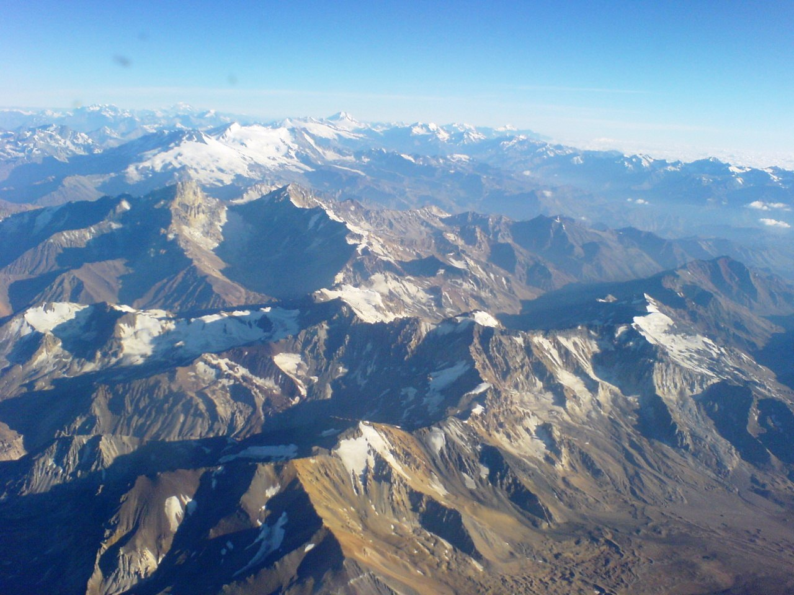
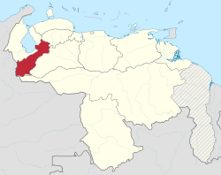
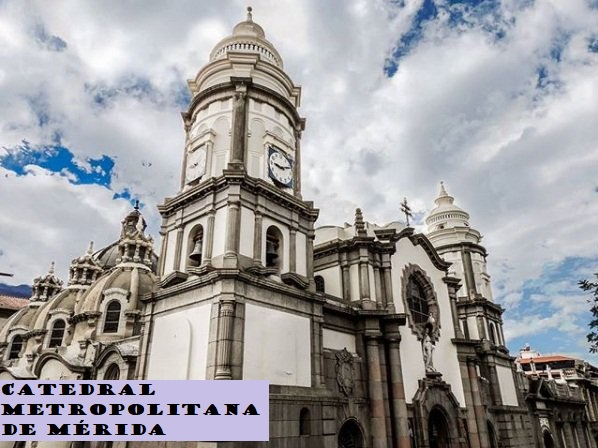
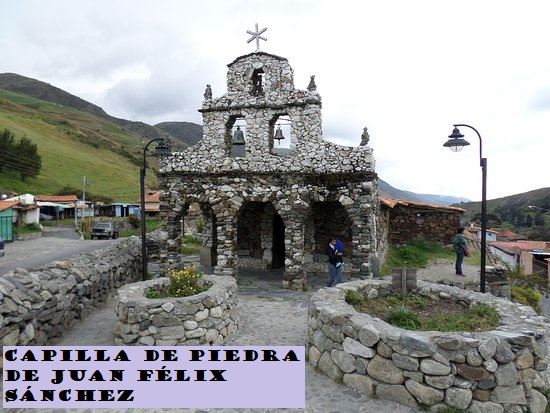
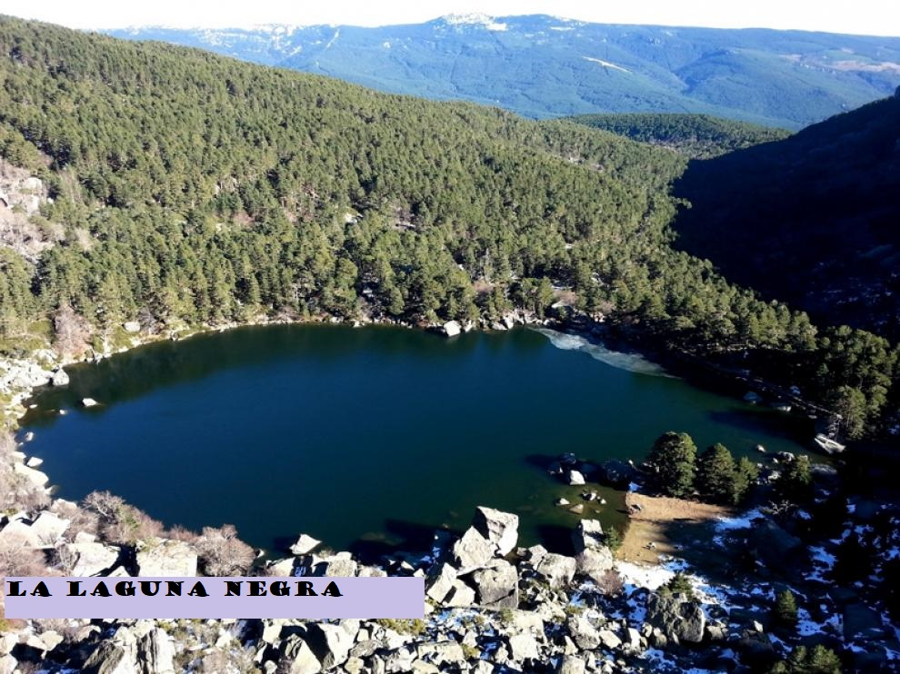
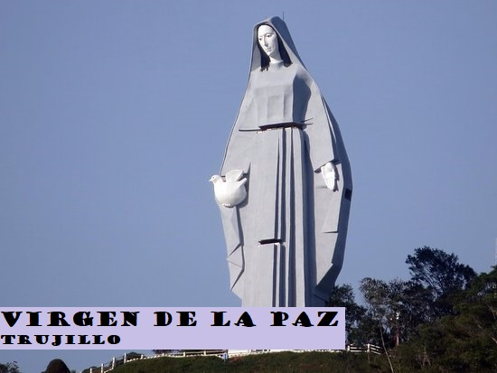
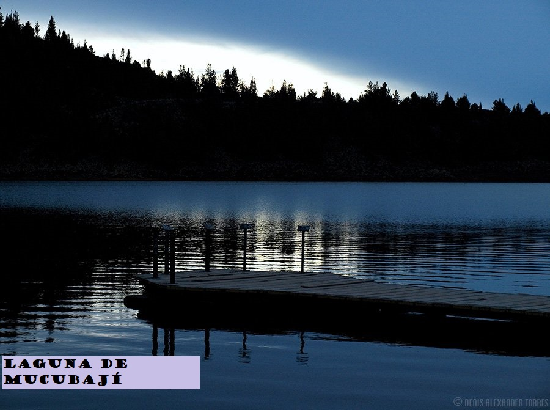
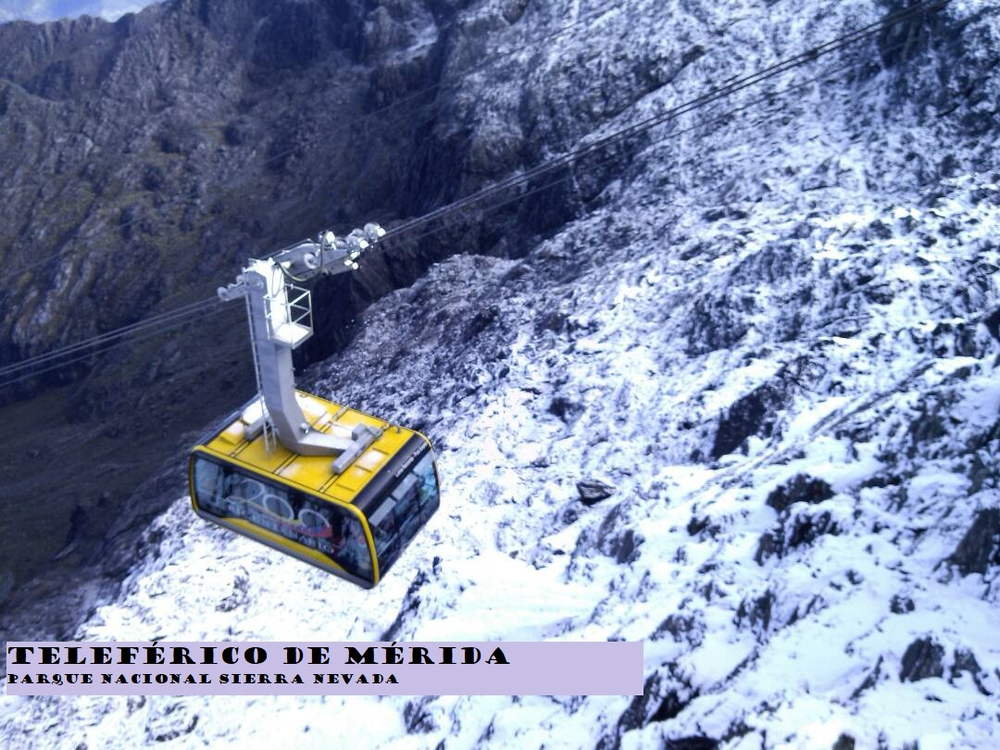
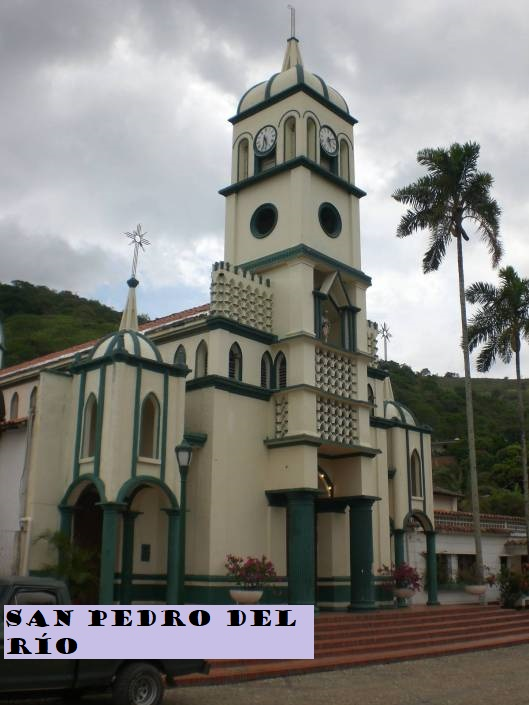
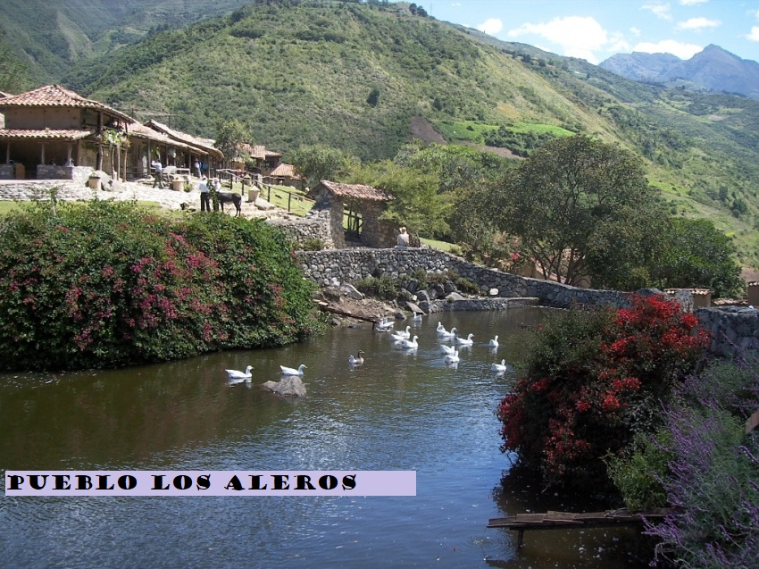

</head>
<body bgcolor="lightblue"></body>
<font face="Elephant" size="30">
<center>Los Andes<br></center></font>
<P alig=justify><font face="georgia" size="5">La Cordillera de los Andes es una cadena montañosa ubicada en la costa occidental del continente Sudamericano, la cual atraviesa el territorio de 7 países diferentes a lo largo de sus más de 7000 kilómetros de extensión, constituyendo la cordillera más larga del planeta Tierra. Esta cordillera alberga en su sector central a la segunda meseta más extensa del planeta y, con altitudes medias de 4000 metros, se encuentra conformada por los volcanes más altos de la Tierra y las montañas más altas de todo el hemisferio Occidental. Entre ellas se destaca el Cerro Aconcagua ubicado en territorio Argentino, que con sus 6960 metros de altitud, representa la cota máxima de la Cordillera de los Andes. Todas estas espectaculares características son el producto de la interacción entre una serie de placas oceánicas y la placa Sudamericana desde el Cretácico Tardío, momento en el cual se termina de fragmentar el supercontinente de Pangea, provocando la separación de África y Sudamérica. Esta separación produjo la apertura del Océano Atlántico y, al mismo tiempo, el nacimiento de la Cordillera de los Andes, debido al cabalgamiento de la placa continental Sudamericana por encima de la placa oceánica. Este proceso se ha mantenido a lo largo del tiempo, provocando el crecimiento de la Cordillera hasta llegar al relieve que observamos hoy en día. Este proceso, denominado subducción, es el principal responsable del levantamiento de la Cordillera de los Andes, y de la gran actividad sísmica y volcánica que la caracterizan en la actualidad. Además de los procesos que tienen su origen en el interior de la Tierra, conocidos como endógenos, la morfología de esta Cordillera ha sido modelada a través del tiempo por procesos que tienen lugar sobre su superficie, conocidos como exógenos. Debido a sus cumbres elevadas, el proceso glaciario se encuentra presente a lo largo de toda la Cordillera, al cual se le suman otros como los procesos fluviales, eólicos, volcánicos y de remoción en masa. La combinación de todos estos procesos le confieren a nuestra cordillera su morfología característica de cordones montañosos separados por valles.</P>
</body>
<section class="about container">
<div class="about textes">
<h2 class="subtitle">Donde esta ubicado?</h2>
<p class="about__paragraph"> Se denomina "Los Andes" a la región comprendida en la parte venezolana de la cordillera más larga del mundo, la cordillera de Los Andes, que viene desde el Cabo de Hornos, allá en el sur de nuestro continente y que luego de atravesar Chile, Argentina, Bolivia, Perú, Ecuador y Colombia entra a nuestro país por el sur-oeste y toma en dirección nor-este, hasta ir a morir casi en el límite de los estados Lara y Yaracuy.</p>


<div class="information__grid"></div>
</section>

<div class="information__grid"></div>
<section class="about container">
<div class="about textes">
<h2 class="subtitle">Turismo</h2></div>

<table borde="2">
<tr>
<td> </td>
<td></td>
<td></td>
<td></td>
</tr>
<tr>
<td></td>
<td></td>
<td></td>
<td></td>
</tr>
<table>

    <div class="about textes">
        <p class="about__paragraph"> Antonella Ruiz.5to A</p>
        

</body>

</head>
</html>